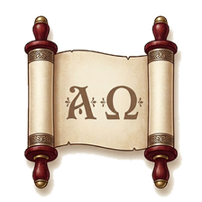

Политика за поверителност
Приложението „Данаил и Откровение“ (пакет com.bobo.danielotkrovenie) е създадено от Боян Бонев.
Приложението не събира лични данни и не ги съхранява на сървър. Не изисква интернет връзка, няма регистрация, реклами, следене или статистика на ползването. Не ползва услуги на трети страни за анализ.
Твоите бележки, отметки, последните търсения, мястото, докъдето си стигнал в четенето, и настройките (размер на шрифта, облик, цвят) се записват само на телефона ти. Те не напускат устройството и се изтриват, когато изтриеш приложението или неговите данни.
Ако натиснеш „Сподели“ или „Изнеси бележки и отметки“, избраният текст се предава на приложението, което ти избереш (например имейл или съобщения). Приложението не го изпраща никъде само.
Функцията ползва вградения в телефона ти синтез на реч. Начинът, по който той обработва текста, зависи от настройките на самото устройство.
Приложението не е насочено специално към деца и не събира данни за никого, включително за деца.
Ако политиката се промени, новата версия ще бъде публикувана на тази страница с обновена дата.
Въпроси? Пиши на bonev.apps.sup@gmail.com.